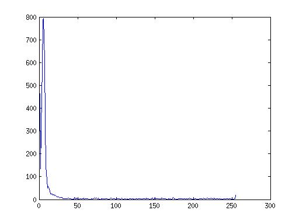

Mona Lisa Before
Mona Lisa Thresholded at 80 differing black and white
Mona Lisa Contrast Increased
Mona Lisa Histogram
Letter F
Letter F Thresholded at 9 and below being white.
Letter F Contrast Increased
Letter F Histogram

Another Image, a picture of an office
Thresholeded at 175
Contrasted
Histogram
Source Code:
1. A)
[1/9, 1/9, 1/9;
1/9, 1/9, 1/9;
1/9, 1/9, 1/9;]
1. B)
Blur
1. C)
information has been lost, you can not perfectly recreate the original image
1. D)
[1/18, 1/18, 1/18;
1/18, 10/18, 1/18;
1/18, 1/18, 1/18;]
#2
The martian is 22.2" away from pathfinder
#3
Prove f*(g*i) == g*(f*i) where * is the convolution operator Let f be the matrix [0,1,1], g = the matrix [0,2,2,0,1,1,3], and i = the matrix [0,1,2,3,4,5,6,7,8]
f*(g*i) = [0,1,1]*([0,2,2,0,1,1,3]*[0,1,2,3,4,5,6,7,8]) = [0,1,1]*([0,2,2,0,1,1,3]*[0,1,2,3,4,5,6,7,8]) = [0,1,1]*[0,0,2,6,10,15,21,30,39,48,39,28,33,29,24] = [0,0,0,2,8,16,25,36,51,69,87,87,67,61,62,53,24]
(f*i)*g = ([0,1,1]*[0,2,2,0,1,1,3])*[0,1,2,3,4,5,6,7,8] = [0,0,2,4,2,1,2,4,3]*[0,1,2,3,4,5,6,7,8] = [0,0,0,2,8,16,25,36,51,69,87,67,61,62,53,24]
Both f*(g*i) and g*(f*i) result in the same matrix so the convolution operator must be communitive